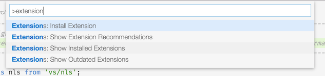
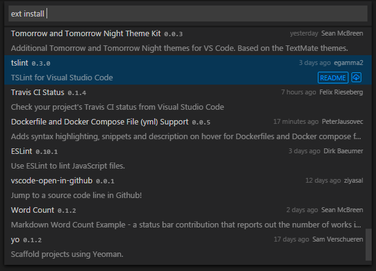
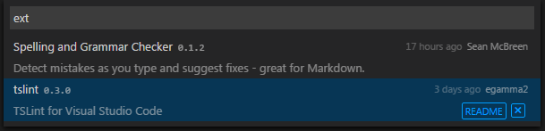
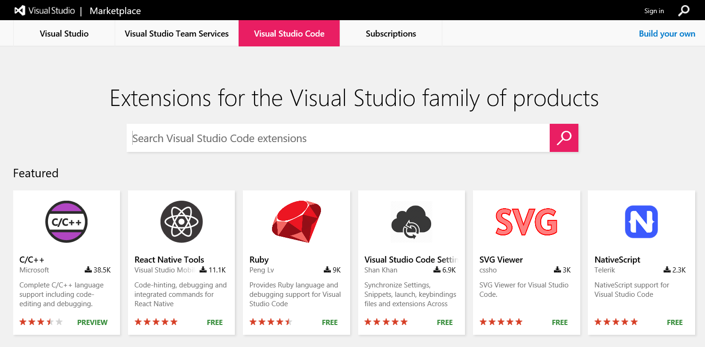

VS Code 扩展市场 VS Code Extension Marketplace
通过扩展，增强VS Code的能力 Increase the power of VS Code through Extensions
The features that VS Code includes out-of-the-box are just the start. VS Code extensions let you add new languages, features and tools to your installation to support your development workflow. VS Code's rich extensibility model lets extension authors plug directly into the VS Code UI and contribute functionality through the same APIs used by VS Code. This topic explains how to find, install, and manage VS Code extensions.
对于VS Code所包括的开箱即用的功能而言，仅仅是开始。 通过安装VS COde扩展，让你添加新的语言，功能和工具，以支持你的开发工作流程。 VS代码的丰富的扩展模型允许扩展的开发者可以直接插手到VSCode 的UI，并通过使用相同的API，向VSCode贡献功能。本主题说明如何查找，安装和管理VSCode扩展。
在VS Code中浏览和安装扩展 Browse and Install Extensions in VS Code
You can browse and install extensions from within VS Code. Press kb(workbench.action.showCommands) and narrow down the list commands by typing extension:
您可以在VScode内浏览安装扩展程序。按下 kb(workbench.action.showCommands)，并通过键入extension来缩小命令列表的范围：

Pick Extensions: Install Extension.
选择 Extensions: Install Extension。
Tip: As an alternative, press
kb(workbench.action.quickOpen)(Quick Open) and typeext installwith a trailing space. Not sure what to install? Visit VS Code Marketplace.小技巧: 作为一种替代, 按下
kb(workbench.action.quickOpen)(Quick Open) and 输入 后面有一个空格的ext install. 不知道要安装什么? 访问 VS Code 市场吧。

You'll see a list of extensions on the Marketplace along with the publisher, published date and a brief description. You can click the README button to go to the extension's VS Code Marketplace page where you can learn more.
在市场你会看到扩展的列表与出版商，发布日期和简要描述。您可以点击'README`按钮转到 VS Code 市场页面，在那里可以学习更多扩展。
Note: If your computer's Internet access goes through a proxy server, you will need to configure the proxy server. See Proxy Server Support for details.
注意: 如果你的计算机通过代理服务器上网，则需要配置代理服务器. 详细信息，参看 Proxy Server Support .
安装扩展 Install an Extension
Simply pick the extension from the list. After a successful install, you'll get the following notification:
只需从扩展列表中选择。然后安装，成功后，你会得到以下通知：
列出已安装的扩展 List Installed Extensions
You can also browse installed extensions with the Extensions: Show Installed Extensions command or by typing kb(workbench.action.quickOpen) (Quick Open) and ext with a trailing space.
您也可以浏览已安装的扩展，通过Extensions: Show Installed Extensions命令，或输入kb(workbench.action.quickOpen) (Quick Open)和后面有一个空格的ext

卸载扩展 Uninstall an Extension
To uninstall an extension, bring up the Extensions: Show Installed Extensions dropdown and click the x button in the lower right of the extension entry. This will uninstall the extension and prompt you to restart VS Code.
要卸载的延伸，把Extensions: Show Installed Extensions菜单下拉，然后单击扩展入口的右下角的x按钮。这将卸载扩展并提示您重新启动VSCode。
更新扩展 Update an Extension
You can quickly look for extension updates by using the Extensions: Show Outdated Extensions dropdown. This will display any available updates for your currently installed extensions. Simply click the Update Extension button in the lower right for the outdated extension and the update will be installed and you'll be prompted to restart VS Code.
通过Extensions: Show Outdated Extensions下拉菜单，您可以快速查找扩展更新。它将显示您当前已安装扩展的所有可用更新。只需点击位于右下角的过时扩展更新按钮，更新就会被安装，你会收到重新启动VSCode的提示。
Tip: Code will also notify you of available updates in the extension icon at the bottom left corner of its window.
小技巧: VS Code也将在窗口的左下角的扩展图标通知您，有可用更新。
浏览扩展 Browse Extensions
Additionally, you can browse and search for VS Code extensions through the VS Code Marketplace site.
此外，你可以在VS Code市场网站，搜索浏览和检索VSCode扩展。

You can review our handy Featured, Most Popular, and Recently Added extension lists and filter by Category (Debuggers, Languages, Linters, etc).
您可以按类别（调试器，语言，棉短绒等）预览我们便捷扩展列表和过滤器，包括特色，最受欢迎，最新添加。

下一步 Next Steps
Here are a few topics you may find interesting...
在这里，你可能会发现有趣的几个主题...
- Publishing to the Marketplace - Publish your own customization or extension to the VS Code Marketplace
- Publishing to the Marketplace - 发布自己的定制或扩展到VSCode市场
- Customization - Learn how to integrate TextMate themes, colorizers and snippets into Visual Studio Code.
- Customization - 了解如何把TextMate的主题，着色器和片段整合到VS Code。
- Yo Code - Learn how the Yo Code extension generator can scaffold out new extensions and package existing TextMate files.
- Extending Visual Studio Code - Start learning about VS Code extensibility
- Extending Visual Studio Code - 开始学习VSCode的可扩展性
- Your First Extension - Try creating a simple Hello World extension
- 你的第一个扩展 - 试着创建一个简单的Hello World扩展。
常见问题 Common Questions
Q: The Extensions: Install Extension command just hangs and never shows a dropdown listing available extensions?
Q: Extensions: Install Extension 命令只是挂起，而没有显示一个下可用扩展的拉列表?
A: This could be due to an incomplete uninstall of an extension which left some extension files under your .vscode/extensions folder. Navigate to .vscode/extensions and see if there is an extension folder (named for the publisher and extension as publisher.extension) for a recently deleted extension. Delete that folder and restart VS Code.
A: 这可能是由于扩展的不完全卸载，而在你的 .vscode/extensions目录内留下一些扩展文件。 到.vscode/extensions内，查看。如果有最近删除的扩展的目录（被命名为出版商和扩展名publisher.extension）,删除这些目录，并重启VSCode。
Q: Can VS Code read TextMate bundles directly?
Q: VS Code能够直接读取TextMate bundles吗?
A: No, VS Code can read some TextMate files such as .tmTheme and .tmLanguage but can not install full TextMate bundles. Also in order to use TextMate theme and syntax files, VS Code needs extra metadata for integration. The Yo Code extension generator makes it easy to package these files for use in VS Code.
A: 不能, VS Code能够读取一些TextMate文件,诸如 .tmTheme 和 .tmLanguage，但不能安装完整的TextMate bundles。另外为了使用TextMate的主题和语法文件，VSCode需要集成额外的元数据。Yo Code扩展生成器可以很容易地打包这些文件，在VSCode中使用。
Q: Can I install Visual Studio Community extensions (shipped in .vsix) in Visual Studio Code?
Q: 我可以在VSCode中安装Visual Studio Community 扩展（以.vsix打包）吗?
A: No, Visual Studio Code's extensibility points are different from Visual Studio Community.
A: 不行, VSCode的扩展点和 isual Studio Community是不同的。
Q: Whenever I try to install any extension, I get a connect ETIMEDOUT error.
Q: 每当我尝试安装任何扩展，我得到一个连接错误ETIMEDOUT.
A: You may see this error if your machine is going through a proxy server to access the Internet. See the Proxy Server Support section in our FAQ for details.
A: 如果你的机器是通过代理服务器访问Internet，您可能会看到这个错误。请参阅我们的FAQ代理服务器支持部分。